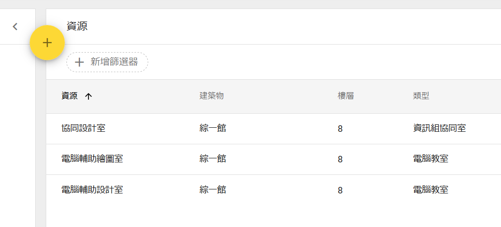
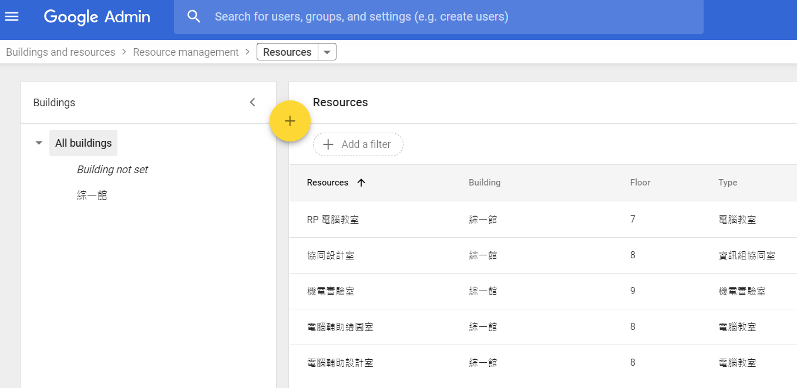
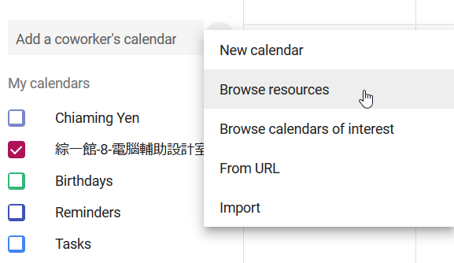
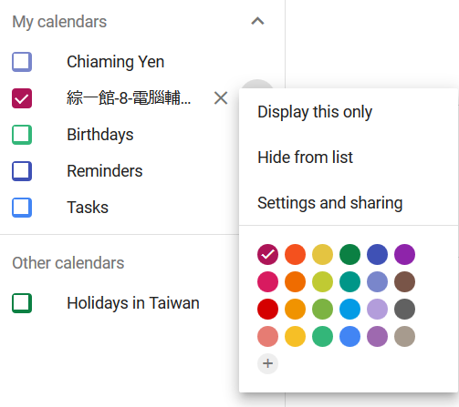
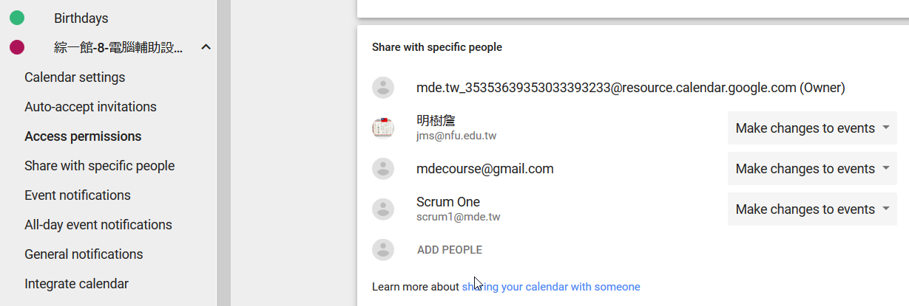

以電腦輔助設計室為例, 行事曆如下:
當擁有管理權限的用戶登入 Gmail 帳號後, 可以在空堂時段, 接受使用者預定, 一旦申請使用流程通過後, 即可將預定使用資料登錄在申請使用的時段中.

為各共用場域建立行事曆:

實驗室行事曆的設定與分享:

與特定行事曆管理人分享設定權, 各管理人包括實驗室管理老師與協助的助教, 可以在登入設定的 Gmail 帳號後, 擁有檢視各實驗室上課與已登錄借用時段, 並可在空檔時段輸入其他使用預借登記.

https://developers.google.com/calendar/quickstart/python
https://developers.google.com/api-client-library/python/apis/calendar/v3
https://qxf2.com/blog/google-calendar-python/
https://developers.google.com/calendar/v3/reference/events/list
https://developers.google.com/calendar/v3/reference/calendarList/list
https://github.com/googleapis/google-api-python-client/tree/master/samples/calendar_api
http://wescpy.blogspot.com/2015/09/creating-events-in-google-calendar.html